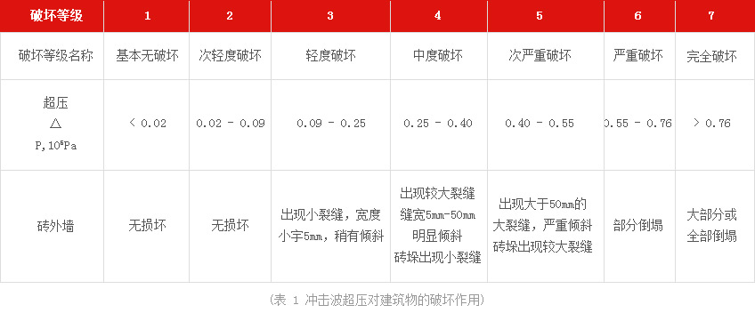
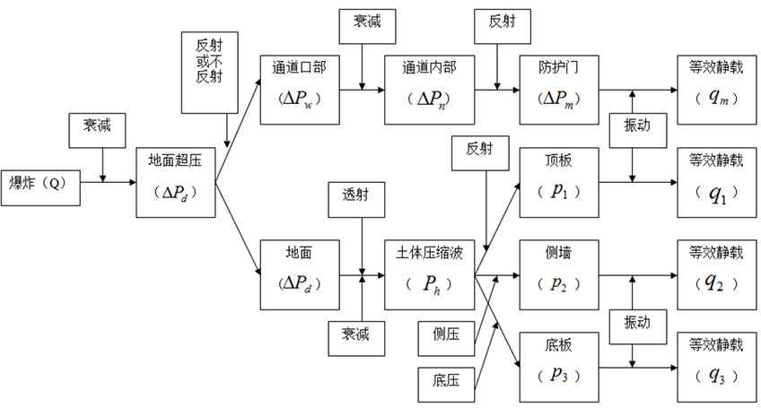

（1）爆炸冲击效应分析
爆炸对砖墙的破坏效应主要是爆炸冲击波。爆炸冲击波对砖墙的损伤可以分为爆炸产物、直接空气冲击波作用和渐进坍塌。近爆点的高压和爆炸冲击会对砖墙的外围护结构如外墙、窗户、梁、柱和结构支架等造成破坏作用，称为直接破坏效应。渐进坍塌是指由于局部构件的破坏引起结构其他部分的破坏，最终导致整个结构破坏或倒塌的现象，也称连续性倒塌。因此，砖墙爆炸破坏过程可以划分为:
1、脆性围护材料产生高速飞射的碎片，特别是玻璃飞片，对人员和设备的伤害危险巨大。抗爆措施和抗爆设计中应充分考虑这些因素。
2、结构构件的局部破坏，即距离爆炸点近的外围结构构件在爆炸产物和强冲波作用下的破坏。
3、连续倒塌，由于外围关键构件的破坏，结构约束减少，破坏后剩下的结构体系不完整，不足于支承整个建筑物而发生连续的倒塌。建筑物整体倒塌对人身的伤害最严重，抗爆设计应最大限度地避免结构的连续性倒塌。
我国颁布的《爆破安全规程》(GB3872-2003)给出了不同冲击波作用下砖墙的破坏程度，见表 1。 由表可知，当冲击波超压峰值高于0.25×105Pa 时，砖墙将出现中等程度的破坏。

（2）爆炸冲击能量在建筑物内部的作用、衰减过程

（3）控制室隐患风险分析
1、建筑外门
建筑外门是控制室抗爆防护中最为薄弱的环节之一。根据《石油化工控制室抗爆设计规范》(GB
50779-2012)有关规定，控制室的建筑外门不宜朝向有爆炸危险方向，应布置在建筑物的两侧或背立面上，外墙门上不得设窗。为了满足操作人员、设备进出及紧急状态下人员疏散的需求，建筑外门一般分为通道门、设备门和紧急疏散出口门三种类型，其中通道门经常使用，进出人员相对较多，频率较高。
2、建筑外窗
由于生产装置发生爆炸时飞溅的玻璃碎片会对室内人员造成较大伤害，按照《石油化工控制室抗爆设计规范》(GB 50779-2012)要求，控制室外墙不应设窗。但目前大部分石化企业除中央控制室外，其它类型的控制室内均有玻璃窗结构，大部分为塑钢结构和钢窗结构，小部分为断桥铝结构，玻璃均未经过高强度抗爆处理。相对于建筑外门，玻璃窗体的面积更大，爆炸时产生的玻璃碎片更多，对操作人员的威胁更大。
3、建筑外墙
当生产装置发生爆炸时，建筑外立面会受到超压、破片以及高温的冲击作用。《石油化工控制室抗爆设计规范》(GB 50779-2012)中要求屋面板及外墙应双面配筋，屋面板的最小厚度不应小于 125mm，墙体的最小厚度不应小于 250mm。 然而，目前大部分石化企业的老旧控制室仍为砖混结构，对于砖混结构的建筑物而言，由于砖砌墙抗剪切性能较弱，当冲击波作用在大面积的砖砌结构上达到 70-100kPa时，极易发生墙体坍塌，严重威胁建筑与内部人员的安全。
4、建筑内部结构
建筑内部抗爆的薄弱环节主要指内墙、梁、板、柱等结构件。石油化工控制室抗爆设计规范》(GB 50779-2012)中要求剪力墙及框架构造应符合现行国家标准《建筑抗震设计规范》(GB50011)的有关规定。当爆炸发生时形成的冲击波由建筑物表面传到至内部结构时，应避免因部分结构或构件破坏而导致整个结构丧失抗震能力或对重力荷载的承载能力，并具有良好的变形能力。根据爆炸冲击效应分析(表1)显示，当冲击波超压达到 100-200kPa 时，会造成防震钢筋混凝土破坏，当冲击波超压达到 200-300kPa 时，会造成大型钢架结构的破坏。